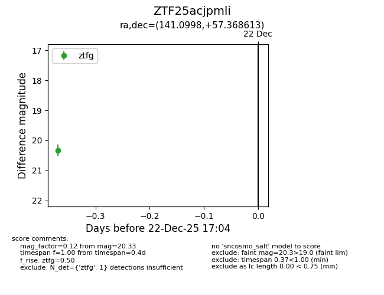
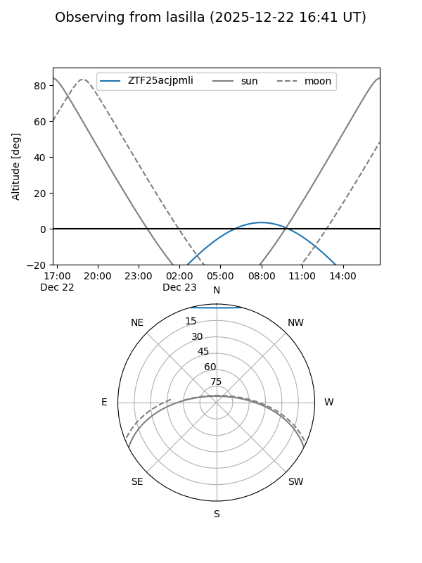
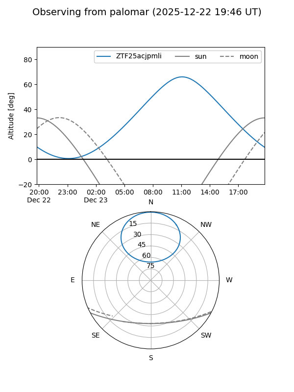

ZTF25acjpmli
Target ZTF25acjpmli at 2025-12-22 17:06
Aliases and brokers:
FINK: fink-portal.org/ZTF25acjpmli
Lasair: lasair-ztf.lsst.ac.uk/objects/ZTF25acjpmli
ALeRCE: alerce.online/object/ZTF25acjpmli
alt names
ZTF25acjpmli (ztf,fink_ztf)
Coordinates:
equatorial (ra, dec) = 141.0998,+57.36861
equatorial (HMS+DMS) = 09:24:23.95,+57:22:07.01
galactic (l, b) = (158.2702,+42.92621)
Flags:
Photometry:
last ztfg=20.33
1 ztfg detections
Lightcurve

Visibility


Additional plots